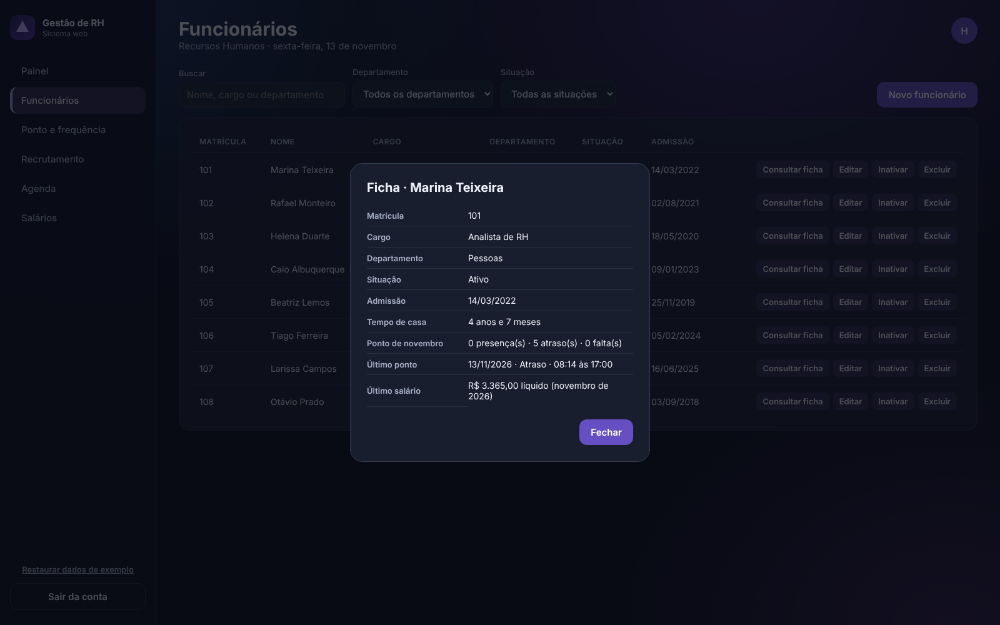
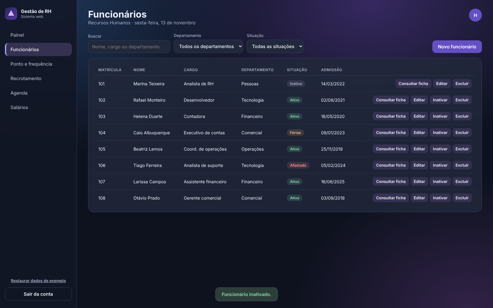
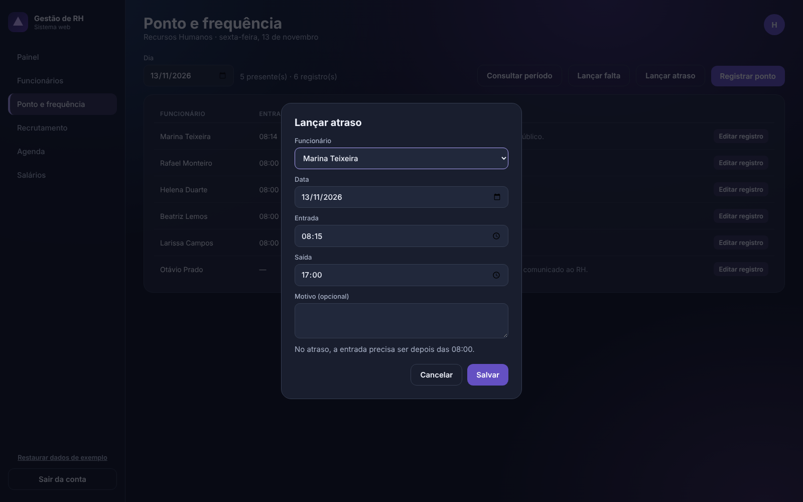
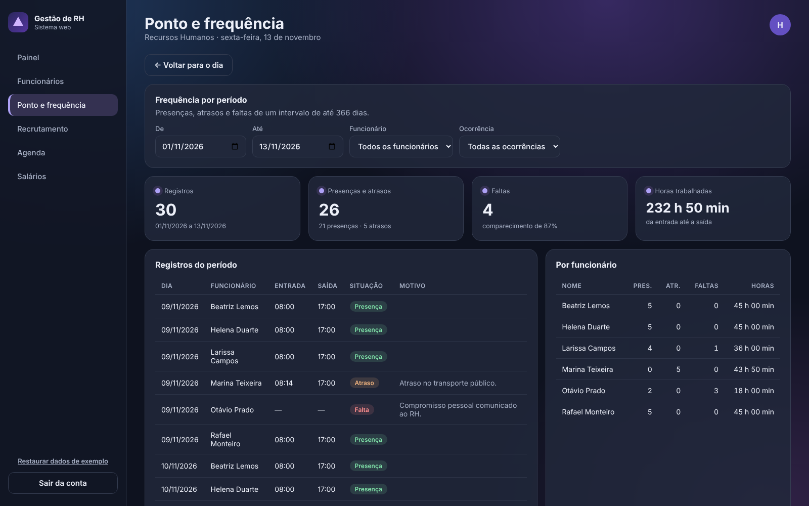
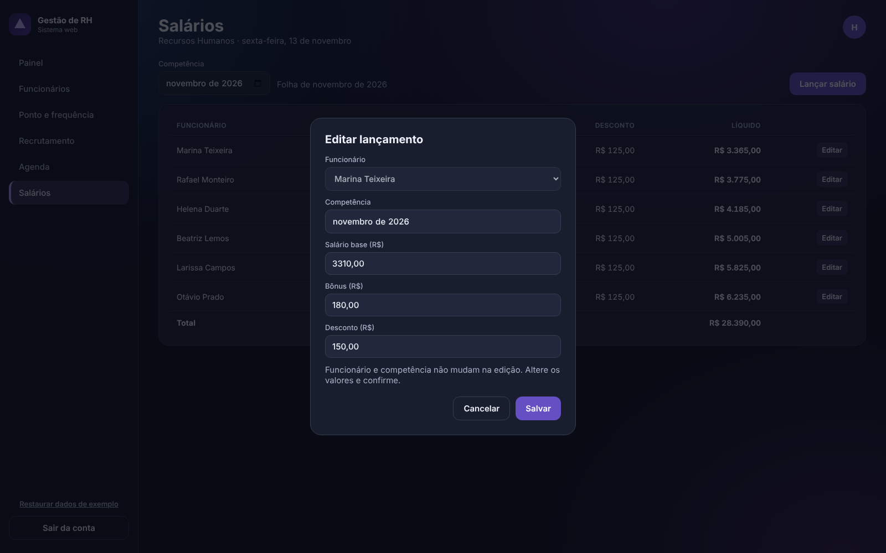
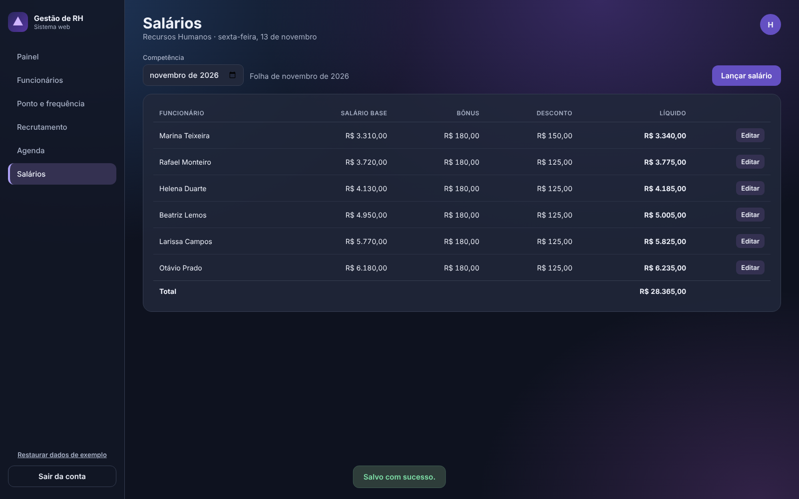
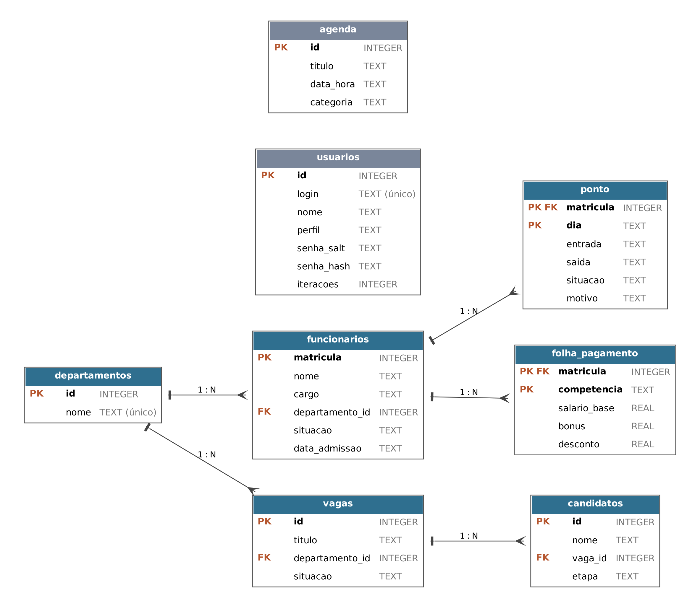

Um programa de computador para Windows, feito em C# com Windows Forms. Cada pessoa entra com o próprio login e vê só o que o perfil dela permite.
Funcionários
Cadastro com ficha do funcionário, inativação e sugestão de cargos
Ponto e frequência
Entrada, saída, falta e atraso, com motivo, e frequência de qualquer período
Recrutamento
Vagas abertas e etapa de cada candidato
Agenda
Compromissos do RH por dia
Salários
Folha de cada mês, com bônus, desconto e edição do lançamento
Painel
Resumo do dia logo depois do login
3 perfis de acesso:AdministradorRecursos HumanosGestor
Interface
As telas
1Entra com usuário e senha
2Cai no painel, com o menu do lado
As imagens são ilustrações das telas, feitas com os dados de exemplo do sistema. Clique em qualquer imagem da página para ampliar.
Nosso grupo
Quem fez
AL
Alberto
Banco de dados
RI
Rickelmy
Interface e back-end
PV
Paulo Victor
Interface
JE
Jefferson
Cadastro de funcionários
CL
Clóvis
Ponto e frequência
KE
Kerlon
CD
Cleberson Dias
Salários
Cadastro de funcionários
Ficha do funcionário e inativação
Parte do Jefferson. A tela de funcionários ganhou a matrícula na tabela, a ficha completa de cada pessoa, o botão Inativar e a sugestão de cargos no cadastro.
Consultar ficha
Cadastro, tempo de casa, ponto do mês, último ponto e último salário.
Inativar
Quem tem histórico não pode ser excluído; vira Inativo e o histórico fica.
Sugestão de cargos
O campo Cargo sugere os cargos que já existem enquanto a pessoa digita.
Gestor:consulta a ficha, mas não vê salário nem inativa

Ficha do funcionário

Lista com filtros, ficha e Inativar
Ponto e frequência
Faltas, atrasos e frequência por período
Parte do Clóvis. Na tela de ponto, o RH lança faltas e atrasos e consulta a frequência de qualquer intervalo de até 366 dias, com os totais de cada funcionário.
Lançar falta
A falta fica sem horário e pode ter um motivo. Não dá pra lançar em data futura.
Lançar atraso
A entrada precisa ser depois das 08:00, o horário padrão.
Consultar período
Filtro por funcionário e ocorrência, horas trabalhadas e comparecimento.
Quem pode:Administrador e RH lançamGestor só consulta

Lançar atraso

Frequência por período
Salários
Editar um lançamento da folha
Parte do Cleberson Dias. Antes, para corrigir um valor da folha, era preciso digitar o lançamento inteiro de novo. Agora dá pra abrir o lançamento e mudar só o que precisa.
Editar lançamento
Botão novo na tela de salários, ou duplo clique na linha.
Chave travada
Funcionário e competência não mudam; só salário, bônus e descontos.
Testado duas vezes
Os mesmos testes rodam na lista em memória e no banco SQLite.

Editar lançamento

Folha de novembro
Banco de dados
Como os dados se ligam
O banco usa SQLite, que guarda tudo num arquivo só (aurora.db). Na primeira vez que o sistema abre, ele cria o banco sozinho com os scripts da pasta BancoDeDados.

Clique no diagrama para ver as colunas de perto
8 tabelas
Funcionários, ponto, folha, vagas, candidatos, departamentos, usuários e agenda
Relações 1:N
Ponto e folha se ligam ao funcionário pela matrícula
Regras no banco
Um ponto por dia, valores válidos e histórico que não pode ser apagado
Dados fictícios
8 funcionários, 30 registros de ponto e 12 lançamentos de folha
Código
Trechos do código
Partes reais do projeto. Clique para trocar o trecho.
Clique no código para ampliar
A matéria no projeto
Onde entra a POO
Classes
Cada parte do sistema é uma classe com uma função só.
class RhService
Herança
As telas herdam do Windows Forms.
LoginForm : Form
Encapsulamento
A tela só fala com o serviço, nunca direto com os dados.
private List<Employee>
Polimorfismo
Memória ou banco, sem mudar as telas.
RepositorioSqlite : IRhRepository
Passo a passo
Como rodar
Dá pra usar direto no navegador, na versão web do sistema (os dados ficam salvos no próprio navegador). Para rodar a versão de Windows, siga os passos abaixo. Precisa do Visual Studio com o .NET 10.
Baixe o projeto no GitHub (botão Code → Download ZIP) ou clone o repositório.
Abra o arquivo Aurora.slnx no Visual Studio. Na primeira vez ele baixa o pacote do SQLite.
Aperte F5. O banco aurora.db é criado sozinho com os dados de exemplo.
Entre com o usuário rh, admin ou gestor e a senha Aurora.demo26.